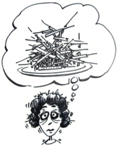

This page has usage examples for the following words:

虫垂炎 appendicitis ちゅうすいえん
虫垂切除 appendectomy ちゅうすいせつじょ
主治医 attending physician しゅじい
麻酔 anesthesia ますい
血液検査 blood test けつえきけんさ
輸血 blood transfusion ゆけつ
同意 consent どうい
点滴 drip infusion てんてき
救急室 emergency room きゅうきゅうしつ
浣腸 enema かんちょう
静脈注射 intravenous injection(IV)
じょうみゃくちゅうしゃ
外科医 surgeon げかい
外科病棟 surgical ward げかびょうとう
検査 test けんさ
尿検査 urine test にょうけんさ
レントゲン室 x-ray room レントゲンしつ
All of a sudden, I had a stomachache.
突然、腹痛が始まりました。
とつぜん、ふくつうがはじまりました。
Are you feeling sick ? (Do you feel like throwing up? )
吐き気がありますか？
はきけがありますか？
First, we will do a blood test and a urine test.
まず、血液と尿の検査をします。
まず、けつえきとにょうのけんさをします。

We will take x-rays.
レントゲン写真をとります。
レントゲンしゃしんをとります。
We need to do an appendectomy.
(We need to take your appendix out.)
虫垂の除去が必要です。
ちゅうすいのじょきょがひつようです。
We need your signature of consent for surgery.
手術の同意書にサインが必要です。
しゅじゅつのどういしょにサインがひつようです。
Surgery will be performed under general anesthesia.
手術は、全身麻酔下で行われます。
しゅじゅつは、ぜんしんますいかでおこなわれます。
A conversation between a patient and a doctor about emergency room
Patient:
If, unexpectedly, you face accident or illness while travelling overseas, and furthermore it is urgent and requires operation, it can be really scary.
海外の旅先での不意の事故や発病・・・しかも、それが、急を要するもの、更には手術を要するものであれば、尚更のこと不安はつのります。
Doctor:
Let us suppose a scene in which you have a sudden abdominal pain, go to an emergency room and are told, following examination and various tests, that you have appendicitis and have to have an operation. When you hear about appendicitis at your home country, you won’t feel anxious so much, because appendicitis is not a rare disease and you know roughly what has to be done, even though you do have some concern. It may help to ease your anxiety, if you know English words and expressions in advance.
例えば、急の腹痛で緊急病院へ行き、診察や各種検査の結果、盲腸炎（虫垂炎）で、それも手術を要する状態であると想定してみましょう。同じ盲腸炎でも、自国に居てそう言われると、比較的よく耳にすることでもあり、不安はあっても、事の成り行きはおおよそ見当がつきますが、何もかも英語となると、心配と痛みに輪をかけることになります。ここで予め、英語の単語や表現を知っておかれると、多少とも気が楽になられるのではないでしょうか。
My two cents 一言おせっかい
The backside of every cloud, even in a dark, gloomy day, shines in silver.
You’ve just have had a valuable experience. You can deal with events calmly in the future.
Every cloud has a silver lining.
どんなどんよりしたうっとうしい雲も、その裏側は銀色に輝いています。
これを貴重な経験と心得て、落ち着いてことにあたってください。
[ki03]
| © 1995-2013 NACOS International Institute. All Rights Reserved. |